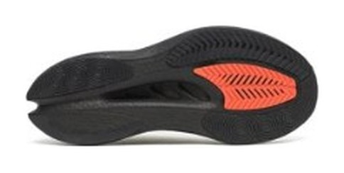
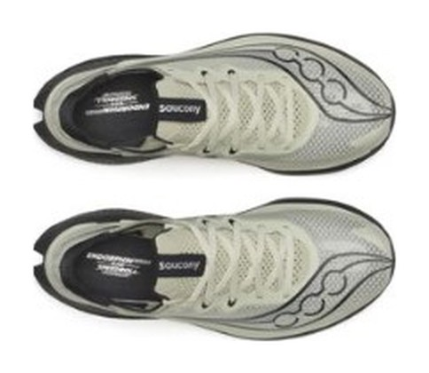

RACE｜レーシング
速さの上限より、失敗の少なさ。
派手さはない。その代わり破綻しない。エンドルフィン プロ5はレース用4足で最も土台が広く、最も長持ちする。練習時間が限られ、終盤にフォームが崩れがちな市民ランナーが、最初に検討すべきカーボンレーサーだ。
サブ3.5〜4、初めてのカーボン、かかと着地、終盤に崩れる自覚がある人。
瞬間的な加速や強い跳ね感を求める上級者。少しでも軽さを取りたい人。


RunRepeatの計測で前足部の幅は120.1mm、かかとは91.2mm。シエロ X1 3.0の前足部107.6mmより12.5mm広い。この広さが、かかとで着地した時のブレや内側への倒れ込みを抑える。靴の安定は結局、土台の幅でかなり決まる。
実測はかかと36.5mm／前足部27.8mm、ドロップ8.7mm。インソール厚（4.3mm）の算入基準などの違いによるものとされる。実質的に重心が下がっており、数字上の厚さより安定しやすい。
最大値を狙っていないのが分かる。突き上げも跳ねすぎも抑え、疲れた脚でも挙動が変わりにくい方向に振っている。4時間前後を走る人にとっては、ピークの高さより、最後まで同じように返ってくることのほうが価値がある。
RunRepeatの計測値。
寿命データのある6足で試算した概算。シエロとアディオスは350km、プロ5は500km、デイリーは想定寿命の中間値（ライダーは800km）で計算。
| エンドルフィン プロ5 | アディオス プロ5 | シエロ X1 3.0 | |
|---|---|---|---|
| 価格 | ¥37,400 | ¥29,700 | ¥38,500 |
| 重量 | 206g（27.0cm） | 約177〜180g（27.0cm） | 213g（28.0cm） |
| 安定性 | 極めて高い | 中 | 低 |
| 想定寿命 | 500km以上 | 約300〜400km | 約300〜400km |
| 1kmあたり | 約75円 | 約85円 | 約110円 |
定価ではアディオスより¥7,700高いが、寿命で割ると逆転する。セール価格¥26,180なら約52円まで下がる（寿命500kmで計算）。
海外レビューでは「初心者が最初に手に取るべきカーボンレーサー」「ハーフからフルのビルドアップ走まで常用できる」と信頼が厚い。フィットの評価も高く、完全ガセットの伸縮ニットタンが甲の形を問わず圧を分散する。圧迫箇所の指摘は非常に少ない。
レース靴を練習にも使えるのがこの靴の強み。PWRTRACゴムの被覆が広く、摩耗深度0.6mmとスーパーシューズ随一の結果が出ている。本番前のマラソンペース走に投入しても寿命を過度に気にしなくて済むので、「レース靴に慣れないまま本番を迎える」という失敗を避けられる。
組み合わせるならジョグにウエーブライダー 30、テンポ走にノヴァブラスト 6。この3足で週末のロングから本番まで一通り回る。
速さの上限より、失敗の少なさを買う靴。サブ3を狙う層には物足りない場面があるが、サブ3.5〜4では最も堅実な答えだ。迷ったらこれでいい。
※本記事はメーカー公表値、海外ラボの計測データ（RunRepeat等）、国内外のレビューをもとにした分析です。1kmあたりの費用は想定寿命からの概算です。